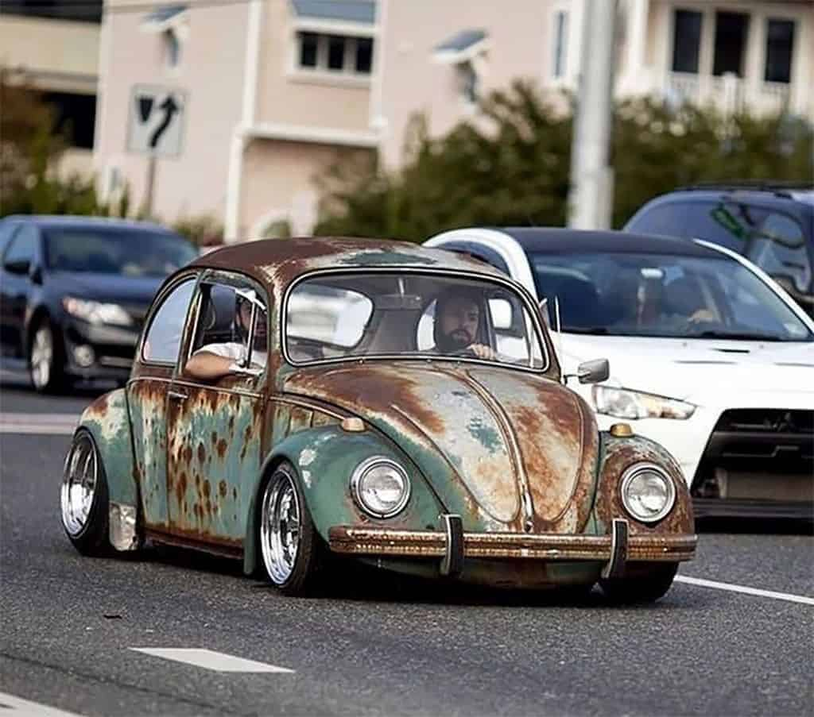
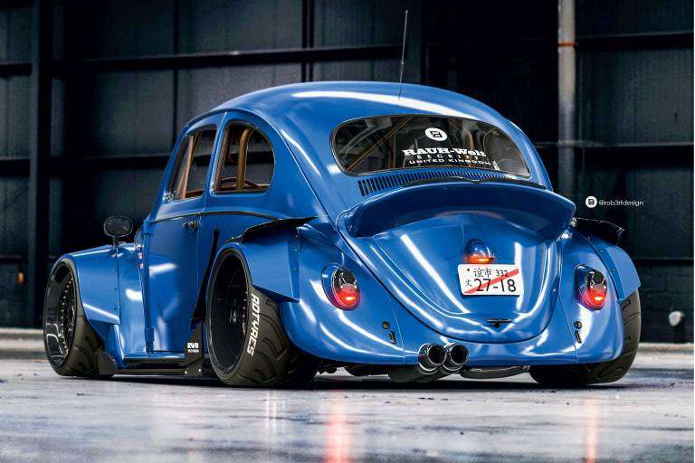

-
Old School

Este estilo tem como principal característica manter o modelo mais original possível, inclusive pintura, nem que não esteja em bom estado. E para dar o toque que caracteriza este estilo, Ele recebe rodas esportivas de liga-leve e o VW recebe uma rebaixada básica pra ficar mais estiloso.
-
Rat Look
Trata-se de veículos onde o estado de conservação da lataria já não é das melhores. Possuem pontos de ferrugem, pintura queimada e outros detalhes que poderiam considerá-los verdadeiras lata-velhas. Junte isso a uma suspensão literalmente pregada, e um motor preparado. O resultado dessa tendência nos faz perceber que existe beleza em veículos detonados.
-
German Look

No caso dos Fuscas e outros "Air Cooled", o German Look é basicamente modernizar o carro com componentes Porsche, Audi e Mercedes... esses carros possuem motor forte e visual racing. Usam-se rodas Vintage, Porsche e BBS, e possuem hábito de alargar essas BBS deixando bordas para fora. Geralmente os carros são socados, lisos e quase sem acessórios (muitos usam acessórios de época apenas).
-
G70's

As exigências para fazer parte do G70's resumen-se em ter um veículo em bom estado, original ou com modificações e acessórios que existiam naquela época. E claro ser ano/modelo 1970 (segunda série) até 1979 (primeira série).
-
60's

Para participar desse movimento, é necessário ter um carro fabricado entre 1960 e 1970 (primeira série) e é primordial estar bem conservado e preservadas as características originais de fábrica. Alterações como insulfilm, rodas, bancos, pinturas extravagantes e motores mexidos, não fazem parte desse grupo.
-
Califórnia Look

Exclusivo para refrigerados a ar, teve como influência as arrancadas Norte-americanas da década de 60, buscando a performance, porém sem excessos. Normalmente usando motores aspirados de altas cilindradas, normalmente acima de 2 litros. As rodas normalmente não ultapassam a tala de 5,5 pol, sempre da marca Empi, Speedwell ou BRM. Pneus sempre radial, na dianteira preferencialmente 135 SR15 mantendo a direção leve e na traseira 205 para melhorar a tração, ja que os motores ultapassem os 200cv. Suspensão dianteira mais baixa que a traseira. Acessórios originais de época, pintura em excelente estado, interior praticamente original, com alguns acessórios vintage, como volante, manopla de câmbio e instrumentos.
-
Tuning
Estilo que consiste em alterar o estilo do carro a um nível extremo, costuma-se imprimir um toque pessoal de cada dono. O tuning é aplicável em quase todos os componentes do carro, como rodas, pneus, carroceria, motor, interior... Há quem gaste um valor acima até do valor do próprio carro.
-
Hood Ride

Derivado dos Rat Rods e dos Rat Looks, o Hood Ride é uma tradição de customização de veículos que respeita a ação do tempo. Ou seja, nada de carros com frisos brilhantes parecendo novos. A pegada é deixar o visual o mais próximo possível do jeito em que o carro foi resgatado.
-
Califórnia Style

Você já deve ter visto um desses por aí: um Fusca com suspensão baixa, com pintura impecável, rodas maiores e cromados brilhando. São os Cal style — abreviação de California style, expressão que pode ser traduzida como “estilo californiano”.